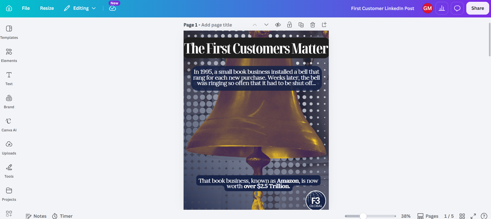

After weeks of searching for internship opportunities to boost my marketing experience, I was thrilled when I was offered a remote position at F3 Global as a Digital Marketing Specialist in April of this year. F3 Global, is a registered nonprofit that was founded in 2025 by a group of ambitious students from universities such as Johns Hopkins and LSU to empower entrepreneurs through microfinance.
According to F3 Global’s website, their “mission is to provide access to financial resources that foster entrepreneurship, enabling individuals to build sustainable businesses and uplift their communities.” They accomplish this mission by extending microfinance and consulting support to small business owners, with a particular focus on economically disadvantaged communities, women, and minorities.
Meaningful Work
As I reflect on what I’ve learned at F3 thus far, one major lesson comes to mind: marketing and promoting a product or service is much more meaningful when you resonate with the goals of the organization offering that product or service.
Given that this is my first in-depth experience with social media marketing, the learning curves that I had to overcome were sometimes a bit discouraging. From this experience, I realized that when challenges occur, motivation is vital.
Trying to make social media posts that looked aesthetically pleasing didn’t come naturally to me. But when I felt like giving up, I reminded myself that I was helping an organization whose goal is to literally change the world by offering international microfinance support. When you keep a noble mission like that in mind, you can’t help but want to continue trying. And so, I did. I’ve grown as a result.
Social Media Marketing Is More Than What's On the Surface
In a more technical sense, another insight that I’ve gained since joining the F3 Global team is an appreciation for what social media marketing really is. I’ve learned about different marketing strategies like Evergreen, Face Forward, and others. I’ve come to grasp the importance of consistent branding, especially when it comes to the aesthetic choices of each post. I’ve also been exposed to the data and analytics that are used to build an effective outreach strategy on LinkedIn and Instagram.

Here's a screenshot of my latest Instagram post in Canva.At the outset, I thought social media marketing was a kind of unstructured and simplistic activity that was all about bringing attention to a company/product/service. I now can see that as with most things in life, there is much more that goes into a social media marketing strategy than what you see on the surface.